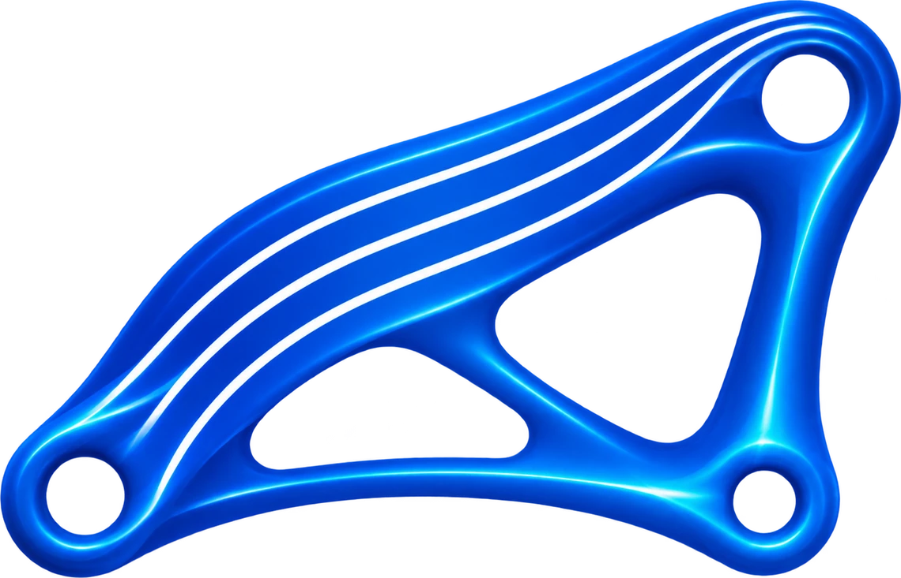
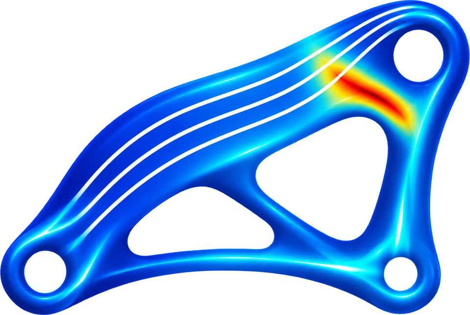
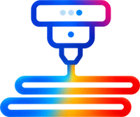
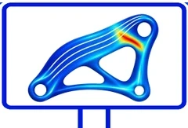
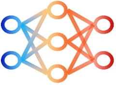
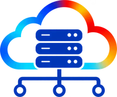
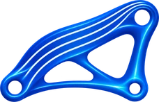

FibrIQ Design
Optimise the geometry and fibre architecture of lightweight structures together.
- Structural topology and material distribution
- Continuous fibre paths and routing
- Multi-objective design across performance and manufacturing constraints
Engineering software in development
FibrIQ brings fracture-aware simulation, structural optimisation and AI-assisted predictions into a unified engineering design workflow, starting with fibre-reinforced composites.

The challenge
In a fibre-reinforced composite, geometry, material distribution and fibre routing all shape how the part carries load and how damage spreads.
The fibre angle that maximises stiffness can differ from the angle that best resists fracture. A useful design must balance both with weight and manufacturability.
Technology
FibrIQ aims to bring computational mechanics, optimisation and AI into the same design loop.

Product ecosystem
The planned ecosystem connects design, simulation and manufacturing. FibrIQ Print is the proposed entry point inside existing print-design software.

FibrIQ Print
FibrIQ Sim
FibrIQ Live
FibrIQ Cloud
FibrIQ DesignOptimise the geometry and fibre architecture of lightweight structures together.
Verify structural performance using high-fidelity finite element analysis.
Explore geometry, material and fibre changes with rapid approximate predictions within the surrogate’s validated design range.
Provide the shared computational infrastructure for the FibrIQ ecosystem.
Bring performance assessment into the software engineers already use to design 3D-printed parts.
Workflow
Four stages bring computational mechanics into everyday engineering decisions.
Specify the geometry, loads, boundary conditions, materials and manufacturing constraints.
Use cloud simulation and optimisation to explore geometries and fibre layouts. Assess potential failure with fracture models.
Compare alternatives using fast surrogate predictions within the validated design range.
Run detailed numerical checks on selected designs and export verified candidates for manufacturing.
Engineering demonstrations
These pitch animations illustrate the research approach and proposed design workflow.
A cantilever example shows how material layout and continuous fibre routing evolve together.
A companion cantilever example shows local fibre orientation during material-layout optimisation.
A product concept shows how a failure-index overlay could update as a designer changes the fibre angle. Values are illustrative.
Applications
Potential applications span industries where weight, durability and manufacturability shape design decisions.
About FibrIQ
FibrIQ is an early-stage, research-driven initiative rooted in computational mechanics, fracture modelling, topology optimisation and artificial intelligence. Its long-term goal is to make physics-driven design accessible across engineering applications.
The planned commercial model combines software subscriptions, usage-based cloud computing and integration partnerships. Initial industrial pilots would validate the approach, with digital twins a longer-term direction.
Team
Team profiles will be added here.
Contact & partnerships
FibrIQ welcomes industrial pilot proposals, research collaborations, software integration partnerships, investment enquiries and general enquiries.
Contact details will be added here.